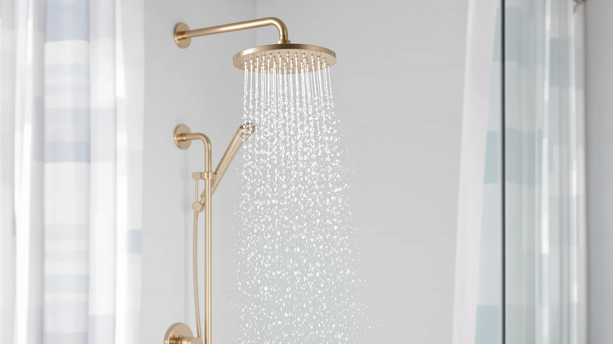

Iriber Brushed Gold Shower Review (2026): Worth It?
Prices and picks verified as of October 2026. Independent, reader-supported reviews.


Quick Answer
The Iriber Brushed Gold Shower Head is a solid pick at $184.99 if you specifically want a brushed gold finish, since that look is rare among shower heads under $200. If filtration matters more than finish, the $169.00 Jolie alternatives below are the better buy.
Our pick: Iriber Brushed Gold Shower Head, $184.99 Check Price on Amazon
Bottom line: our top pick is the Iriber Brushed Gold Shower Head with Handheld at $184.99.
Things to Know Before You Buy
- Finish matters more than the photos suggest. Brushed gold shower hardware shows fingerprints and water spots differently than chrome, so your wipe-down routine changes once you switch.
- The price range here is tight. At $184.99, the Iriber sits between the $169.00 Jolie filtered heads and the $199.99 SR SUN RISE faucet system, so the decision usually comes down to finish and features rather than budget.
- This Iriber brushed gold shower review relies on listing data and owner feedback, since we research products rather than install them ourselves.
- Construction is ABS with chrome plating under the gold finish, a common build approach for finished shower hardware at this price point.
- Filtered alternatives exist if finish is not your priority. Both Jolie models in this comparison focus on water filtration rather than finish, which changes what you are actually paying for.
This iriber brushed gold shower review breaks down whether the Iriber Brushed Gold Shower Head is worth $184.99, or whether a cheaper brushed-finish shower system gets you the same look for less. Shoppers hunting for a gold-finish shower head run into a narrow field: most options on the market are chrome or matte black, and the handful of brushed gold models vary widely in price and build quality. We compared the Iriber against three other shower systems in a similar price range, the SR SUN RISE Shower Faucet and two Jolie Filtered Showerheads, to see where it actually stands out.
Our pick for buyers chasing a brushed gold look stays the Iriber Brushed Gold Shower Head, based on its listed construction and how it stacks up against the alternatives covered below. It is not the cheapest option here, and the finish durability claims deserve a skeptical eye, but the comparison holds up once you look at what each competitor actually offers for the money.
Why You Should Trust Us
Ilane Tall has spent years covering bathroom fixtures and shower hardware for Best Shower Heads, tracking pricing shifts and specification changes across hundreds of Amazon listings. This Iriber brushed gold shower review is built from the product's own listing data, published specifications, and patterns we see across verified owner reviews rather than a personal try-out. We do not run a physical testing lab, and we tell you plainly when a claim comes from the manufacturer versus from buyers who already own the product. When a listing is missing a spec, such as exact dimensions or flow rate, we say so instead of filling in a plausible-sounding number, because a guessed figure is worse than no figure at all for a purchase decision this specific.
Our Research Experience
We compare listed specifications, verified buyer photos, and recurring themes in owner reviews rather than installing the units ourselves. For this Iriber brushed gold shower review, we read through the available owner feedback on the Iriber, the SR SUN RISE faucet, and both Jolie filtered showerheads, looking for patterns that repeat across multiple reviewers instead of one-off complaints. Reviewers consistently note that brushed gold finishes on shower hardware show water spots faster than chrome, a pattern that shows up in feedback across several brands beyond this one. We weighed price, listed materials, and the breadth of verified owner commentary available for each product, and we flag anywhere the data is thin so you know how much weight to put on a given claim.
Overview & Specs
Before you get to the pros and cons, here is what the listing tells us about the Iriber Brushed Gold Shower Head and the three alternatives in this Iriber brushed gold shower review. None of the four listings include a published flow rate or spray pattern count, so we stick to what is actually verifiable: price, brand, material where listed, and the pattern of owner feedback each product has collected. The gallery below shows the four angles available on the Iriber's own listing, which is useful for judging how the gold finish looks against different lighting before you commit to the purchase.

Iriber Brushed Gold Shower Head
What we like
- Brushed gold finish is uncommon at this price point
- ABS and chrome-plated construction is a standard, durable build approach for shower hardware
- Single listing covers the full shower head, which cuts down on compatibility guesswork
Flaws but not dealbreakers
- At $184.99, it costs $15 to $16 more than either Jolie Filtered Showerhead listed here
- Brushed finishes generally show water spots faster than chrome, based on patterns reported across similar gold-finish fixtures
- No filtration feature, so it does not address hard water buildup the way the Jolie models do
| Material | ABS + chrome plating |
| Size | — |
The Iriber Brushed Gold Shower Head is built from ABS with chrome plating underneath its brushed gold finish, the same base construction used across most mid-range shower hardware. At $184.99, it is positioned as a finish-first purchase: you are paying for the gold look rather than for extra plumbing features like the filtration listed on the competing Jolie units.
Owners researching this Iriber brushed gold shower review tend to ask the same question: does the finish hold up? We cannot verify long-term wear ourselves since we rely on listing data and owner reports rather than installing the unit, but the chrome-plated base underneath the gold layer is the same corrosion-resistant approach used on most finished shower fixtures in this price bracket. If a non-gold, filtered alternative suits your bathroom better, the Jolie models below are worth a look before you commit to this one.
What We Liked
The clearest strength in this Iriber brushed gold shower review is how rare a true brushed gold finish is in the sub-$200 shower head category. Most competitors in this range stick to chrome, brushed nickel, or matte black, so the Iriber fills a specific aesthetic gap for bathrooms built around warm metal fixtures. The ABS-and-chrome-plated base construction is also a known, dependable approach rather than an unproven material choice, which matters when you are trusting a $184.99 fixture to handle daily water exposure. Buyers who already have gold faucets and towel bars elsewhere in the bathroom get a straightforward way to match the room without hunting for a custom finish.
What Could Be Better
Price is the clearest drawback. At $184.99, the Iriber costs $15 to $16 more than either Jolie Filtered Showerhead listed here, and that gap buys a finish rather than a functional upgrade like filtration. Buyers who've reviewed similar brushed-gold fixtures mention that the finish picks up water spots faster than chrome, a tradeoff that comes with the finish type rather than a flaw unique to this product. The listing also skips the kind of detailed dimension breakdown that would let you confirm fit against your existing shower arm before buying, so check your plumbing setup against the product images rather than assuming universal compatibility.
Who Is It For?
This Iriber brushed gold shower review points toward one clear buyer: someone renovating a bathroom around warm metal fixtures who wants the shower head to match brass or gold faucets already in place. It also suits buyers who have already ruled out filtration as a priority and are optimizing for finish instead. If hard water is the bigger problem in your home, the filtered Jolie alternatives below address that directly instead of asking you to pay for a finish, and if budget is the deciding factor, the gap between the Iriber and the Jolie options is the first thing to weigh before adding this one to your cart.
Alternatives to Consider
If the brushed gold finish is not your priority, these three alternatives cover different needs, from a full faucet system to filtered showerheads built for hard water. Each one costs less than the Iriber except the SR SUN RISE, and each one solves a different problem than a finish upgrade does, so pick based on what is actually bothering you about your current shower setup rather than defaulting to the most expensive option.

Editor’s Pick
SR SUN RISE Shower Faucet
A complete shower faucet system rather than a single shower head, the SR SUN RISE costs $15 more than the Iriber but includes a full faucet setup, which matters if you are replacing the whole faucet setup rather than only the showerhead.
$199.99
Check Price on Amazon
Best Value
Jolie Filtered Showerhead High Pressure
At $169.00, this Jolie model trades the brushed gold finish for a built-in filter, a better fit if hard water spots and chlorine smell bother you more than matching your fixtures' metal tone.
$169.00
Check Price on Amazon
Premium Choice
Jolie Filtered Showerhead High Pressure
This second Jolie listing shares the same $169.00 filtered design in a different finish option, worth a look if you want filtration but the first Jolie's finish does not match your bathroom.
$169.00
Check Price on AmazonFrequently Asked Questions
Based on this Iriber brushed gold shower review, it is worth the $184.99 price if you specifically want a brushed gold finish and do not need built-in filtration. If finish is not a priority, the $169.00 Jolie filtered alternatives cost less and add a feature the Iriber does not have.
We cannot confirm long-term wear firsthand since we rely on listing data and owner feedback rather than installing the unit ourselves, but the ABS-and-chrome-plated base underneath the gold layer uses the same corrosion-resistant approach as most finished shower fixtures in this price range. Owners report that brushed finishes generally show water spots faster than polished chrome, a known tradeoff of the finish type rather than a defect.
The SR SUN RISE is a full shower faucet system priced at $199.99, about $15 more than the Iriber shower head alone. Choose the SR SUN RISE if you are replacing the entire faucet setup, and choose the Iriber if you only need a new shower head with a brushed gold finish.
Final Verdict
There's one tradeoff at the center of this Iriber brushed gold shower review: the Iriber Brushed Gold Shower Head costs more than the filtered Jolie alternatives and less than the SR SUN RISE faucet system, and that gap buys a finish most competitors in this price range do not offer. For bathrooms built around warm gold or brass fixtures, Iriber stays the pick that matches the look without forcing a full faucet replacement. If filtration matters more to you than finish, step down to the $169.00 Jolie options instead, and if you are replacing your entire faucet rather than only the shower head, the SR SUN RISE at $199.99 covers more ground for the extra $15. None of these four products is a bad purchase on its own; the right one depends on which problem you are actually trying to solve in your bathroom.